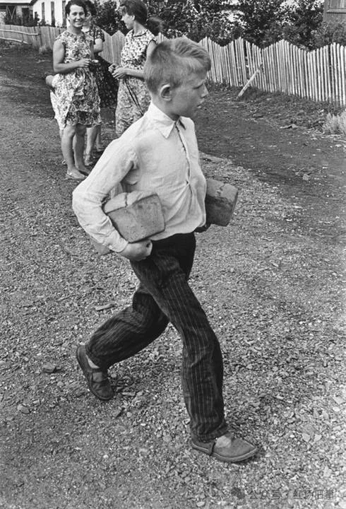
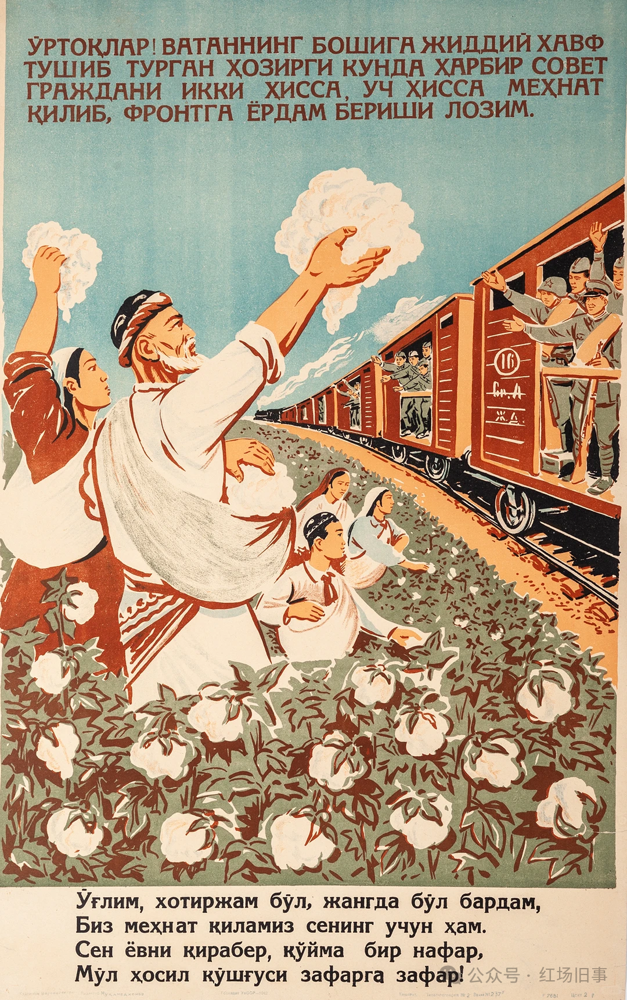
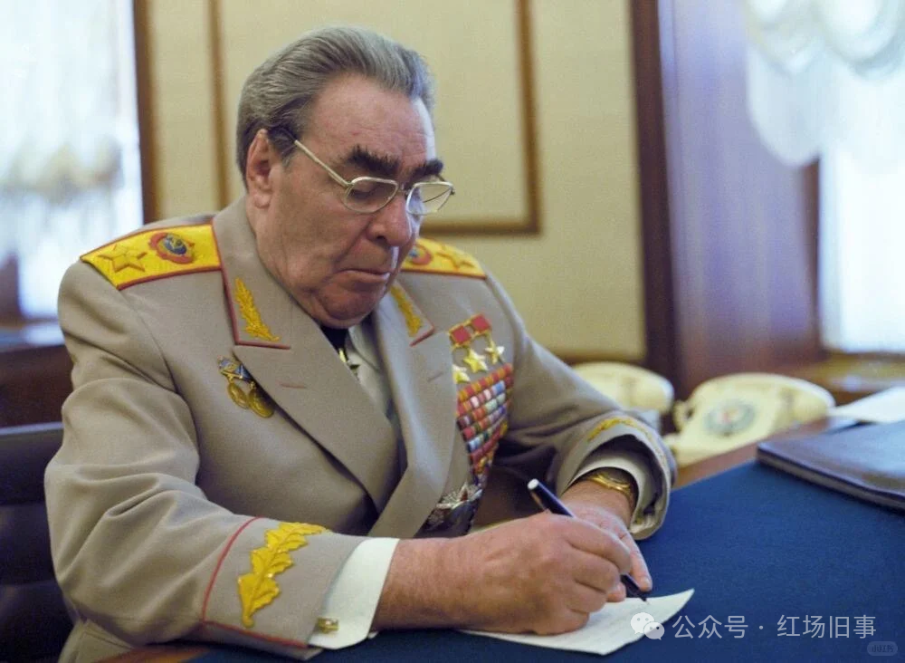

勃列日涅夫十八年：苏联社会的真实日常
文字与图片版权归各自权利人所有。 查看公众号原文 ↗
1977年，莫斯科的一个普通早晨清晨6点，安娜·伊万诺夫娜已经站在面包店门口。她排在队伍的第17位。前面有15个人，后面还在不断增加。没有人抱怨，这是生活的常态。排队是苏联人的第一项全民运动。安娜今天运气不错——黄油到货了。每人限购一公斤。她迅速盘算：自己家留半公斤，剩下的半公斤可以跟邻居换点别的东西。从面包店出来，她拐进肉店。队伍绕了三个弯。两个小时后，她拎着半公斤碎肉出来——好肉早就被前面的人买走了。回家的公交车上，熟人压低声音说：“下周有匈牙利皮鞋到货，要不要？”安娜点点头。这就是勃列日涅夫时代苏联人的日常生活。表面上是超级大国，核弹比美国多，坦克比北约多。但在普通人眼里，这一切都比不上一根香肠、一双皮鞋来得实在。
一、排队：全民第一运动排队是苏联人生活的必修课。排什么？一切紧俏商品。肉、奶、黄油、香肠、鸡蛋——没有一样是随时能买到的。家具、电视、冰箱——排队等几个月是常事。汽车——得等几年。一个美国人到访苏联时惊讶地发现：莫斯科街道上，只要有超过10个人的队伍，就一定是在排某个商店。没有人知道今天卖什么，但先排上再说，排到了再问卖什么。排队催生了独特文化。人们发明各种占位方法：用书包、用网兜、用一块砖头。有人专门以排队为业——替别人排队，收点小费。排队成了苏联人的社交场所。一位苏联作家写道：“我们的童年是在队伍里度过的。排队是我们共同的家。”
二、黑市：影子里的平行世界官方商店空空如也，但黑市上应有尽有。

黑市，苏联人称之为“纳列沃”——字面意思是“左边”，暗指“非法的”。在这里，你可以买到任何东西：进口牛仔裤、西方唱片、走私化妆品、从工厂“顺”出来的零件。黑市有自己的规则。交易不说“买”，说“搞到”；不说“多少钱”，说“怎么换”。真正的硬通货是：牛仔裤、伏特加、外汇券、关系。一个典型故事：伊万想买电视机。商店要等两年，黑市现货贵三倍。他认识酒厂司机，用两箱伏特加换了电视机。酒厂司机用伏特加换了一双德国皮鞋。皮鞋又换了一盒万宝路。一圈下来，所有人都得到了想要的东西，只有国家亏了。黑市是短缺经济的必然产物。当官方配给不能满足需求时，影子经济就会填补空白。
三、关系网：比卢布更硬的通货在黑市上，卢布有时也不好使。真正管用的是：关系。苏联人称之为“布拉特”——靠关系走后门。在勃列日涅夫时代成为全民共识。有“布拉特”的人，生活是另一个世界。认识肉店售货员，就能买到好肉；认识家具店经理，就能提前拿到新款沙发；认识医院护士，就能让家人有个好床位；认识大学招生办，就能让子女挤掉别人。
没有“布拉特”的人，只能排队等命运施舍。一个笑话流传：两人见面。一个问：“你儿子怎么找到工作的？”另一个答：“没关系，我女儿嫁给了他。亲家是厂长，儿子就进了工厂。这叫‘布拉特’。”“布拉特”维系着整个社会。它让普通人也能“搞到”紧缺物资，但也让特权阶层更加固化。你有多少“布拉特”，就能过什么样的生活。
四、送礼：另一种交换形式与“布拉特”配套的，是送礼文化。在苏联，送礼不是表达感情，而是建立关系。给医生送礼，才能得到更好治疗；给老师送礼，子女才能被关照；给售货员送礼，才能在柜台下面买到好东西；给领导送礼，才能保住职位。送礼有讲究。太贵重不行——那是行贿；太便宜也不行——那是看不起人。要恰到好处：一瓶好酒、一盒巧克力、一条进口烟。关键是“心意”，心意到了，关系就通了。礼物从哪来？从黑市来，从“布拉特”来，从出国的人那里来。能出国的人是苏联的“贵族”，带回来的洋货是最好的礼物。一个苏联人回忆：“我父亲一辈子存了两样东西：伏特加和巧克力。不是为了自己吃，是为了送礼。”
五、造假数据：数字里的谎言如果说黑市是民间的谎言，那么造假数据就是官方的谎言。勃列日涅夫时代，造假成为普遍现象。工厂报喜不报忧，集体农庄虚报产量，商店做假账，统计局编假数字。从上到下，每个人都在制造数字，每个人都知道数字是假的。最典型的是乌兹别克斯坦。第一书记拉希多夫在位20年，每年上报棉花产量都超额完成。但核查发现：上报产量比实际多出一倍以上。他用虚假的“白色黄金”换来了表彰，养肥了整个官僚集团。

苏联时期棉花宣传海报为什么造假？因为计划指标完不成。为什么完不成？因为体制僵化、资源错配。那怎么办？造假。造假成了解决问题的唯一办法。造假又催生另一种“布拉特”：要造假成功，需要上下串通。你帮我瞒报，我帮你虚报；你给我凑数，我给你补单。造假把整个官僚系统变成了巨大的共谋网络。
六、从理想主义到犬儒主义：信仰的流失1961年，苏共二十二大宣布“这一代苏联人将生活在共产主义社会”。那时候，年轻人相信这个。他们去开荒，去建设，去为理想奋斗。20世纪70年代末，没人再提这事了。不是不提，是不信了。日常打败了理想。年轻人不再关心政治，不再崇拜英雄，不再相信报纸上的口号。他们关心的是：怎么搞到牛仔裤，怎么买到披头士唱片，怎么认识能搞到外汇券的人。一个苏联作家写道：“我们这一代人，是在谎言中长大的。我们学会了怎么在这个谎言里活下去。”这种心态叫“犬儒主义”——不相信任何价值，不追求任何理想，只关心自己的小日子。表面上服从，内心里嘲讽；嘴上说一套，实际做一套。一个笑话精准捕捉了这种心态：问：苏联人最擅长什么？答：假装工作。问：政府最擅长什么？答：假装付钱。20世纪70年代末，调查年轻人最想成为什么样的人。答案不是英雄，不是劳模，不是科学家，而是——“能搞到东西的人”。信仰流失了。那个曾经为理想献身的国家，变成了一群只想过好小日子的人。
结语：日常打败了理想1982年11月，勃列日涅夫去世。他执政18年，给苏联留下什么？核弹更多了，坦克更多了，宇航员飞得更远了。但也留下了一个疲惫、麻木、犬儒的社会。

那个社会里，人们不再相信明天会更好，只希望今天能“搞到”点什么。排队代替了劳动，黑市代替了市场，关系代替了规则，送礼代替了公平，造假代替了真实。18年前，赫鲁晓夫下台时，官僚们欢呼“稳定”。18年后，人们发现：稳定变成了停滞，停滞变成了腐烂。一个诗人在勃列日涅夫去世后写道：我们等了十八年，等来的不是春天，而是更长的队，和更空的商店。这不是诗，这是那个时代的墓志铭。而那个时代留下的最大遗产，是一种深入骨髓的信念：理想都是骗人的，只有香肠是真的。这种信念，将在1991年那个寒冷的冬天，发挥它最后的威力。